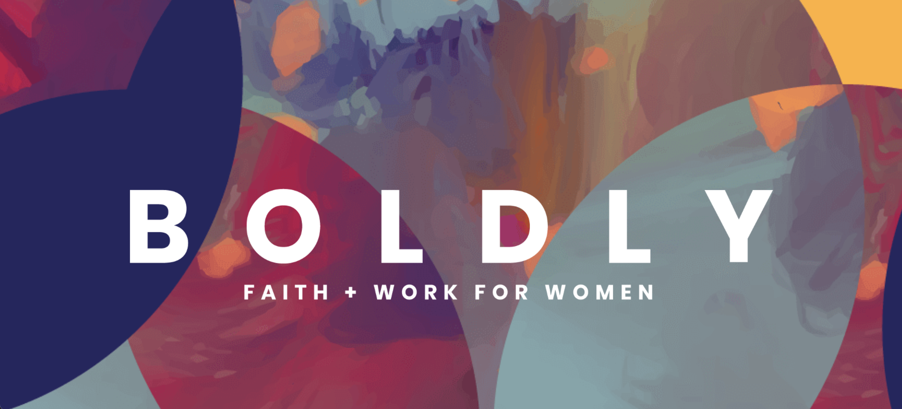

Example Project
Conference Ops and Platform Implementation

The Problem
A 5-person nonprofit — with only 2 full-time staff — set out to produce a first-of-its-kind national Faith and Work conference for women, with no existing conference infrastructure, no project management system, no registration or payment platform, no livestream capability, and no documented processes. All of this needed to be built from scratch while the team continued running normal nonprofit operations.
The Solution
When I joined the nonprofit, the team had no project management system. I identified this gap independently and led the evaluation, implementation, and training of Wrike org-wide, before the BOLDLY Conference was ever on the horizon. When the conference was greenlit, that foundation was already in place. I then built the full conference operational infrastructure — registration, ticketing, payment processing, email marketing campaigns, conference website, and livestream — simultaneously, in roughly 9 months.
What I did
- Evaluated and implemented Wrike org-wide, trained staff, and provided ongoing support
- Solely built and managed the conference registration platform, payment processing, conference website, email marketing campaigns, and livestream setup
- Served as the operational hub between vendors — coordinating with the registration company, graphic design firm, and livestream platform simultaneously
- Managed a part-time employee throughout the process
- Anticipating a planned absence during the conference window, I participated in interviews, made recommendations on two new hires, and created the training framework and documentation that set them up to execute successfully in my absence — a framework the organization continued using afterward
Impact
- 400+ attendees at a first-of-its-kind virtual, national conference
- Full operational infrastructure built by a 2-person team in ~9 months, while maintaining normal nonprofit operations
- Handoff documentation became ongoing organizational reference material
Tools
Wrike, Brushfire, Squarespace, Sendinblue, Stripe